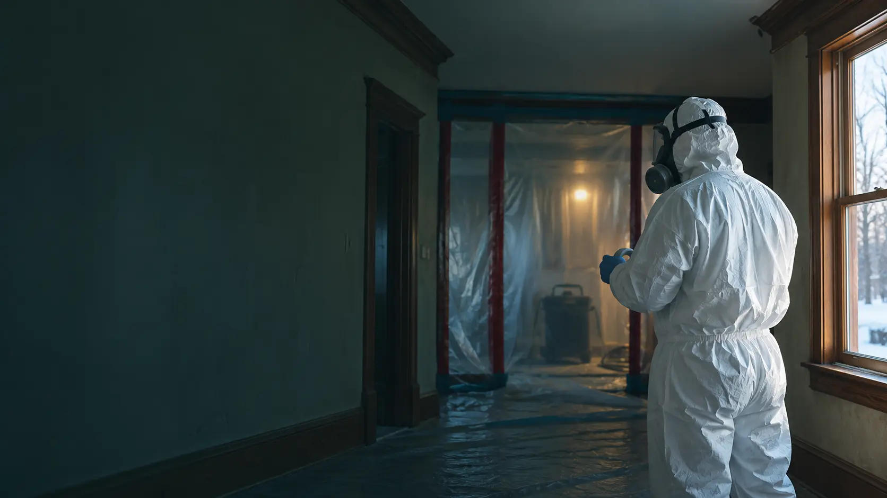
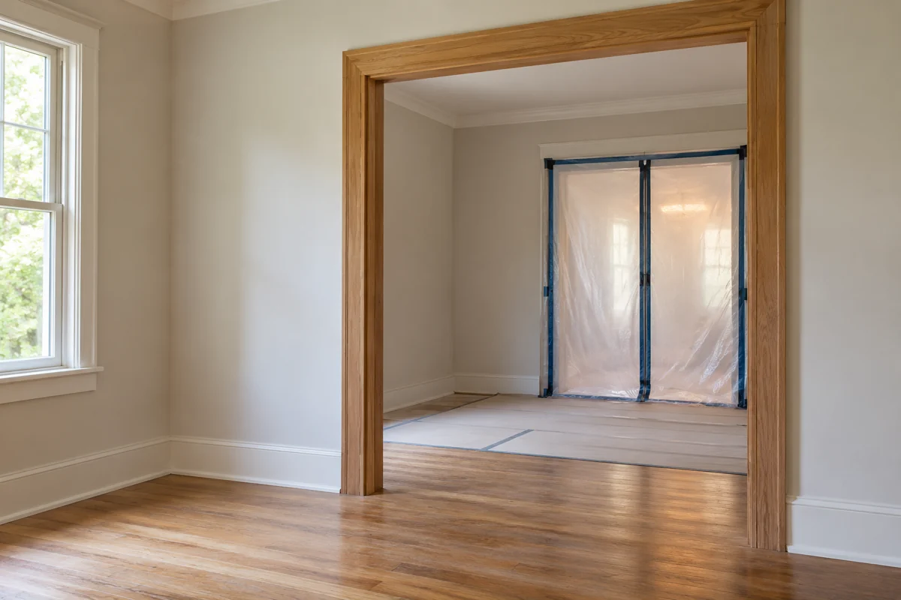

Tell us what’s planned
Share the property type, your Alberta region and what you need help with.

Asbestos concerns shouldn’t leave your plans on hold. Take the next step with assessment, abatement and property restoration support.
Whether you’re planning a renovation or dealing with a material concern, start with a service that fits your project.
Know what’s there. Know what’s next.
Explore service 02Homes · Commercial propertiesA considered plan for complex materials.
Explore service 03Moisture damage · RestorationAddress the damage. Understand the cause.
Explore service 04Renovations · Tenant improvementsMake room for what comes next.
Explore service 05Removal projects · Site clear-outsPlan the final step from the start.
Explore service 06Homeowners · Property managersFewer unknowns before work begins.
Explore service
MAKE ROOM FOR WHAT’S NEXT.A home renovation. A new tenant. A building with a history. Every project begins with a different question.
We bring the conversation back to what matters: the materials involved, your plans for the space and a clear scope before work begins.
Review the concern before deciding on the work.
Discuss the scope, access and project expectations.
You don’t need all the answers to get started. A few project details are enough to begin the conversation.
Share the property type, your Alberta region and what you need help with.
Discuss existing reports and whether an assessment is the right next step.
Review a defined scope and scheduling considerations before work begins.
From established homes to evolving commercial spaces, start a conversation about your Alberta property.
Project availability and travel requirements are confirmed individually.No. Appearance alone cannot confirm whether a material contains asbestos. Appropriate sampling and laboratory analysis are needed to identify it. Avoid disturbing suspect materials while you arrange advice.
Before cutting, sanding or removing suspect building materials, arrange an assessment. Alberta Health Services recommends testing materials that may contain asbestos before renovations in buildings built before the early 1990s.
Not necessarily. The material’s condition, its location and whether planned work will disturb it all matter. An assessment can help determine the appropriate approach for the specific property.
The type and amount of material, access, containment needs, waste handling and project requirements all affect the scope. Share your project details so the next step can be discussed before a quotation is prepared.
Tell us about your property and what you have planned. We’ll take it from there.
Tell us about your project